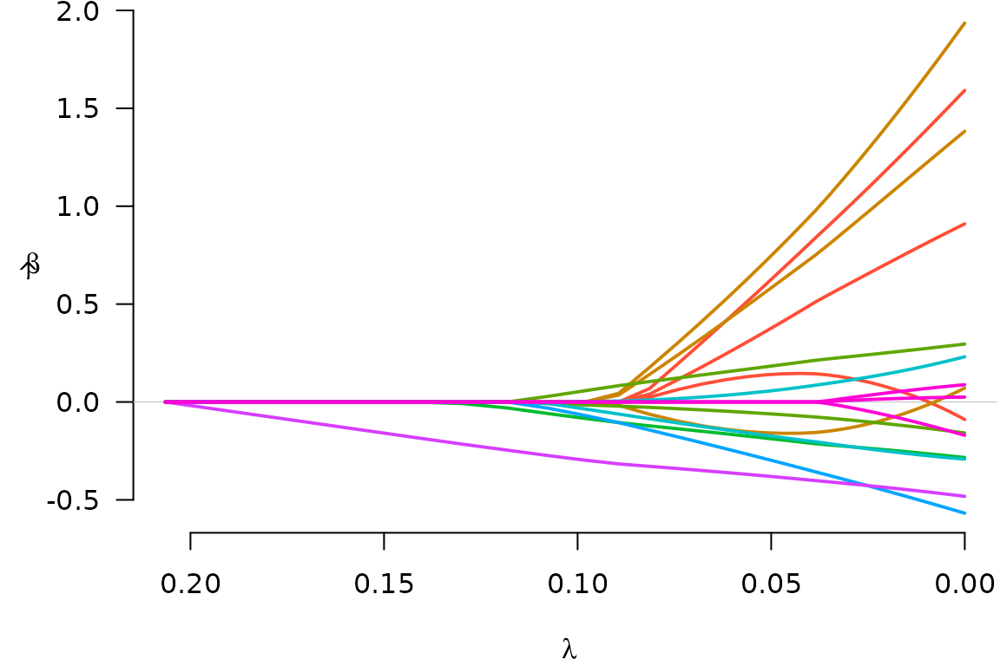

Getting started with grpreg
Patrick Breheny
Source:vignettes/getting-started.rmd
getting-started.rmdgrpreg is an R package for fitting the regularization
path of linear regression, GLM, and Cox regression models with grouped
penalties. This includes group selection methods such as group lasso,
group MCP, and group SCAD as well as bi-level selection methods such as
the group exponential lasso, the composite MCP, and the group bridge.
Utilities for carrying out cross-validation as well as post-fitting
visualization, summarization, and prediction are also provided.
This vignette offers a brief introduction to the basic use of
grpreg. For more details on the package, visit the
grpreg website at https://pbreheny.github.io/grpreg/. For more on the
algorithms used by grpreg, see the original articles:
For more information on specific penalties, see https://pbreheny.github.io/grpreg/articles/web/penalties.html.
grpreg comes with a few example data sets; we’ll look at
Birthwt, which involves identifying risk factors associated
with low birth weight. The outcome can either be measured continuously
(bwt, the birth weight in kilograms) or dichotomized
(low) with respect to the newborn having a low birth weight
(under 2.5 kg).
data(Birthwt)
X <- Birthwt$X
y <- Birthwt$bwt
head(X)
# age1 age2 age3 lwt1 lwt2 lwt3
# [1,] -0.05833434 0.011046300 0.029561818 0.12446282 -0.02133871 -0.130731102
# [2,] 0.13436561 0.055245529 -0.096907046 0.06006722 -0.06922831 -0.033348413
# [3,] -0.04457006 -0.009415469 0.045088774 -0.05918388 0.03746349 0.004618178
# [4,] -0.03080577 -0.026243567 0.052489640 -0.05202881 0.02390664 0.019034579
# [5,] -0.07209862 0.035141739 0.004821882 -0.05441384 0.02832410 0.014571538
# [6,] -0.03080577 -0.026243567 0.052489640 -0.01386846 -0.03296942 0.049559472
# white black smoke ptl1 ptl2m ht ui ftv1 ftv2 ftv3m
# [1,] 0 1 0 0 0 0 1 0 0 0
# [2,] 0 0 0 0 0 0 0 0 0 1
# [3,] 1 0 1 0 0 0 0 1 0 0
# [4,] 1 0 1 0 0 0 1 0 1 0
# [5,] 1 0 1 0 0 0 1 0 0 0
# [6,] 0 0 0 0 0 0 0 0 0 0The original design matrix consisted of 8 variables, which have been expanded here into 16 features. For example, there are multiple indicator functions for race (“other” being the reference group) and several continuous factors such as age have been expanded using polynomial contrasts (splines would give a similar structure). Hence, the columns of the design matrix are grouped; this is what grpreg is designed for. The grouping information is encoded as follows:
group <- Birthwt$group
group
# [1] age age age lwt lwt lwt race race smoke ptl ptl ht
# [13] ui ftv ftv ftv
# Levels: age lwt race smoke ptl ht ui ftvHere, groups are given as a factor; unique integer codes (which are
essentially unlabeled factors) and character vectors are also allowed
(character vectors do have some limitations, however, as the order of
the groups is left unspecified, which can lead to ambiguity if you also
try to set the group.multiplier option). To fit a group
lasso model to this data:
fit <- grpreg(X, y, group, penalty="grLasso")We can then plot the coefficient paths with
plot(fit)
Notice that when a group enters the model (e.g., the green group),
all of its coefficients become nonzero; this is what happens with group
lasso models. To see what the coefficients are, we could use the
coef function:
coef(fit, lambda=0.05)
# (Intercept) age1 age2 age3 lwt1 lwt2
# 3.02892181 0.14045229 0.62608119 0.37683684 0.74715315 -0.15825582
# lwt3 white black smoke ptl1 ptl2m
# 0.58290856 0.18344777 -0.06107624 -0.18778377 -0.17422515 0.05710668
# ht ui ftv1 ftv2 ftv3m
# -0.29776948 -0.38050822 0.00000000 0.00000000 0.00000000Note that the number of physician’s visits (ftv) is not
included in the model at \(\lambda=0.05\).
Typically, one would carry out cross-validation for the purposes of carrying out inference on the predictive accuracy of the model at various values of \(\lambda\).
 The coefficients corresponding to the value of \(\lambda\) that minimizes the
cross-validation error can be obtained via
The coefficients corresponding to the value of \(\lambda\) that minimizes the
cross-validation error can be obtained via coef:
coef(cvfit)
# (Intercept) age1 age2 age3 lwt1 lwt2
# 3.04158282 0.03585964 1.31006421 0.77036812 1.56663368 -0.04705625
# lwt3 white black smoke ptl1 ptl2m
# 1.15399868 0.26474685 -0.12475165 -0.25602530 -0.26542118 0.16769927
# ht ui ftv1 ftv2 ftv3m
# -0.48892550 -0.44999086 0.06039457 0.01966211 -0.09634012Predicted values can be obtained via predict, which has
a number of options:
predict(cvfit, X=head(X)) # Predictions for new observations
# [1] 2.547122 3.006659 3.042348 2.564257 2.577717 3.083550
predict(fit, type="ngroups", lambda=0.1) # Number of nonzero groups
# [1] 5
predict(fit, type="groups", lambda=0.1) # Identity of nonzero groups
# [1] race smoke ptl ht ui
# Levels: age lwt race smoke ptl ht ui ftv
predict(fit, type="nvars", lambda=0.1) # Number of nonzero coefficients
# [1] 7
predict(fit, type="vars", lambda=0.1) # Identity of nonzero coefficients
# white black smoke ptl1 ptl2m ht ui
# 7 8 9 10 11 12 13Note that the original fit (to the full data set) is returned as
cvfit$fit; it is not necessary to call both
grpreg and cv.grpreg to analyze a data set.
Several other penalties are available, as are methods for logistic
regression and Cox proportional hazards regression.